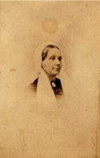

Beaubien-Perrault-Benington - Person Sheet
Beaubien-Perrault-Benington - Person Sheet
Birth10 Sep 1800, Havre-de-Grace, Newfoundland20
Death11 Jul 1860, St-Thomas-de-Montmagny, Québec20
Occupationavocat, depute, juge44
FatherMichael Power
MotherElizabeth Tovey (ca1771-1851)
Spouses

Birth24 Aug 1812, Québec, Québec20
Death1 Aug 1882, Fraserville, Québec
BurialRivière-du-Loup, Québec20
FatherPhilippe Joseph Aubert De Gaspé (1786-1871)
MotherSusanne Allison (~1795-1847)
Marriage15 Dec 1829, St-Jean-Port-Joli, Québec20
ChildrenSuzanne Eliza (1830-)
Maria Georgiana (1832->1881)
William Thomas (1833-1834)
William Philip (1835-)
Thérèse Catherine (1837-)
Michael Henry (1839-)
Norman Edward (1840-1841)
Dominick Norman (1842-)
Isabella Amelia (1845-)
Augustus (1847-)
Isabella Zelia (1850-)
Marie Louise (1852-)
Emma Adella Laura (1855-)
Notes for William Power
Lawyer. Studied in Ireland before settling in Québec. Provided legal assistance to P.A. de Gaspé.
20 Étudia le droit sous l’hon. Norman Uniacke, procureur-général du Bas-Canada. Barreau 1826. Député de Gaspé 1832-38. Juge de la Cour de Circuit 1838. Juge Cour Supérieure 1857.
90 “... dont la mémoire vivra longtemps dans les paroisses du district de Québec où il distribuait la justice à la satisfaction général [sic]. Je ne crains pas d’être accusé de partialité en lui rendant ce petit tribut d’éloges, fort de l’approbation de tous ceux qui ont connu cet homme vertueux et estimable”
22Né à Havre-de-Grâce, à Terre-Neuve, le 10 septembre 1800, fils de Michael Power, commerçant originaire de Waterford, en Irlande, et d'Elizabeth [Tovig].
Étudia dans un collège catholique en Irlande et, à compter de 1820, fit l'apprentissage du droit à Québec, auprès notamment de Norman Fitzgerald Uniacke, puis de
George Vanfelson. Admis au barreau le 8 juin 1826.
Nommé greffier de la Cour de vice-amirauté en juin 1827; sa commission fut renouvelée en 1830 et 1838.
Élu député de Gaspé à une élection partielle en mars 1832; appuya tantôt le parti des bureaucrates, tantôt le parti patriote, mais vota contre les Quatre-vingt-douze
Résolutions. Réélu en 1834; donna son appui au parti des bureaucrates. Son mandat prit fin avec la suspension de la constitution, le 27 mars 1838.
Fait capitaine dans les Queen's Volunteers des Cantons-de-l'Est, en novembre 1838. Nommé juge de la Cour des requêtes dans le district de Québec, le 15 mai
1840, passa à la Cour de circuit, le 23 avril 1844, et fut promu à la Cour supérieure, pour le district de Montmagny, le 25 novembre 1857.
Décédé dans la paroisse Saint-Thomas (à Montmagny), le 11 juillet 1860, à l'âge de 59 ans et 10 mois. Les obsèques eurent lieu dans l'église St. Patrick, à
Québec, le 14 juillet 1860.
Avait épousé dans la paroisse de Saint-Jean-Port-Joli, le 15 décembre 1829, Suzanne Aubert de Gaspé, fille de Philippe-Joseph Aubert de Gaspé, avocat, seigneur
et futur écrivain, et de Suzanne Allison.
Petit-fils par alliance de Pierre-Ignace Aubert de Gaspé. Beau-frère par alliance de Charles Joseph Alleyn et de Georges-René Saveuse de Beaujeu. Oncle
de Georges-Raoul-Léotalde-Guichard-Humbert Saveuse de Beaujeu.
20 Étudia le droit sous l’hon. Norman Uniacke, procureur-général du Bas-Canada. Barreau 1826. Député de Gaspé 1832-38. Juge de la Cour de Circuit 1838. Juge Cour Supérieure 1857.
90 “... dont la mémoire vivra longtemps dans les paroisses du district de Québec où il distribuait la justice à la satisfaction général [sic]. Je ne crains pas d’être accusé de partialité en lui rendant ce petit tribut d’éloges, fort de l’approbation de tous ceux qui ont connu cet homme vertueux et estimable”
22Né à Havre-de-Grâce, à Terre-Neuve, le 10 septembre 1800, fils de Michael Power, commerçant originaire de Waterford, en Irlande, et d'Elizabeth [Tovig].
Étudia dans un collège catholique en Irlande et, à compter de 1820, fit l'apprentissage du droit à Québec, auprès notamment de Norman Fitzgerald Uniacke, puis de
George Vanfelson. Admis au barreau le 8 juin 1826.
Nommé greffier de la Cour de vice-amirauté en juin 1827; sa commission fut renouvelée en 1830 et 1838.
Élu député de Gaspé à une élection partielle en mars 1832; appuya tantôt le parti des bureaucrates, tantôt le parti patriote, mais vota contre les Quatre-vingt-douze
Résolutions. Réélu en 1834; donna son appui au parti des bureaucrates. Son mandat prit fin avec la suspension de la constitution, le 27 mars 1838.
Fait capitaine dans les Queen's Volunteers des Cantons-de-l'Est, en novembre 1838. Nommé juge de la Cour des requêtes dans le district de Québec, le 15 mai
1840, passa à la Cour de circuit, le 23 avril 1844, et fut promu à la Cour supérieure, pour le district de Montmagny, le 25 novembre 1857.
Décédé dans la paroisse Saint-Thomas (à Montmagny), le 11 juillet 1860, à l'âge de 59 ans et 10 mois. Les obsèques eurent lieu dans l'église St. Patrick, à
Québec, le 14 juillet 1860.
Avait épousé dans la paroisse de Saint-Jean-Port-Joli, le 15 décembre 1829, Suzanne Aubert de Gaspé, fille de Philippe-Joseph Aubert de Gaspé, avocat, seigneur
et futur écrivain, et de Suzanne Allison.
Petit-fils par alliance de Pierre-Ignace Aubert de Gaspé. Beau-frère par alliance de Charles Joseph Alleyn et de Georges-René Saveuse de Beaujeu. Oncle
de Georges-Raoul-Léotalde-Guichard-Humbert Saveuse de Beaujeu.